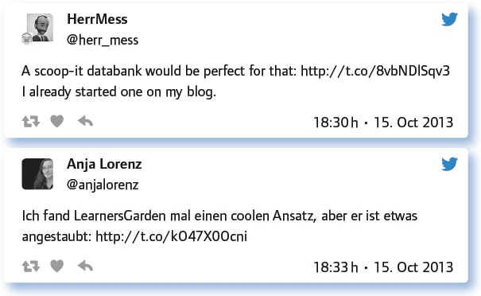

von André J. Spang
Mit klarer Mehrheit wurde dieses Thema von der #EDchatDE Community gewählt. Wen wundert es, kann man doch davon ausgehen, dass alle Teilnehmerinnen und Teilnehmer des Twitterchats der Nutzung digitaler Medien gegenüber zumindest sehr aufgeschlossen gegenüberstehen.
Der Workflow der meisten EDchatter ist also überwiegend digital, vor allem, wenn es die häusliche Vorbereitung angeht. In der Schule stoßen dann einige doch an Grenzen, die z. B. fehlendes W-Lan, kaputter Beamer oder Datenschutz heißen, um nur einige zu nennen.
Doch davon lässt sich der begeisterte #papierfreie Lehrer nicht abschrecken – er versucht andere zur Nutzung digitaler Medien durch seinen eigenen „Good Practice“ zu motivieren, gibt Tipps und bietet Hilfe an. Was da an Tipps zusammen gekommen ist, kann man in den folgenden, ausgewählten Tweets nachlesen, die auch nun schon gut 3 Jahre nach dem Chat immer noch nichts an Aktualität eingebüsst haben.
Was steht/liegt auf deinem Schreibtisch? Analoges? Digitales? Überflüssiges? (Gerne mit Beweisfoto)
Die #EDchatDE-Lehrenden sind digital gut ausgestattet – keine Angst, sie nutzen auch noch Bücher und Papier, viel zu viel, wie manche meinen:
iMac, Smartphone, jede Menge Klassenmappen mit Kopiervorlagen, leider.
My desk at school has books, calendar, writing tools, a computer, my planner, pictures etc.
Digital immer, analog je nach Bedarf.
Alles mögliche – leider./Everything – unfortunately: http://t.co/sQpVucY6n4
Rechner, Tablet (Smartphone), Papierunterlage zum schnellen Mitkritzeln, Papier.
Links Dinge, die fertig sind, rechts Dinge die zu tun sind, Scanner und Drucker, Teetasse.
3 Monitore, Smarty, ueberfluessigerweise: Papierablage, 3-stoeckig.
Also außer meinem – absolut dringend gebrauchten – Laptop? (hüstl) Kaffeetasse von heute Morgen, von gestern Abend und …
Wie digital ist dein Workflow? Papierfrei, Mix, analog?
Der private Workflow sieht schon sehr digital aus, ob das auch in der Schule so ist …
Fast alles, was ich bekomme, wird digitalisiert. Fast alles, was die Schüler bekommen, wird analogisiert, leider.
Ich versuche, so viel wie möglich digital zu machen und so wenig wie möglich auszudrucken. Ich habe sogar schon vom Tablet musiziert.
Google educational suite, mostly docs/spreadsheets/calendars, dropbox, vimeo, email, wordpress, bitly.
Noch Mix. Ich arbeite täglich auf das papierlose Universum hin.
Fast alles ist digitalisiert, Sammeln und Jagen auch …
Ich versuche, so viel wie möglich im ZUM-Wiki zu erstellen: http://t.co/9L2F1pq4UP. Das klappt leider nicht immer.
Ich bereite alles digital vor, dann gehe ich mit USB-Stick und Ausdruck in die Schule, da ich dort überwiegend offline arbeiten muss.
Unterrichtsvorbereitungen: digital, außer ich habe es mit Papiermaterial zu tun, das gecopyrighted ist und ich nicht verwenden darf.
Mix: Am Schuljahresanfang mache ich viel ipad-Planung. Je weiter das Schuljahr fortgeschritten ist, desto mehr Improvisation erfolgt. Arbeitsblätter erstelle ich mit dem Laptop.
Welche digitalen Tools nutzt du und warum? Links sind willkommen!
Der Chat stammt aus 2013 – dennoch, sind die meisten Anwendungen immer noch aktuell und hilfreich. Ob Datenschützer damit allerdings immer einverstanden sind, wie die Inhalte verwendet werden, ist fraglich …
Ich mache alle Handnotizen auf dem iPad mit Notability. Danach kann ich sie auch digital austauschen und weiter verarbeiten.
Ich nutze: http://t.co/0WAJia64n6. Die ganze Klasse ist vernetzt, man folgt sich wie auf Twitter
Neuerdings mal http://t.co/Bnjdbe302s mit Erfolg ausprobiert. Ich nutze außerdem evernote, Dropbox, Google Calender (leider) etc.
Important tools for me: @ownCloud, GoodNotes (Handwriting!) (iOs), NotebooksApp (iOs), PDF, Scanner.
Tools, die auch bei Schülern gut ankommen: Youtube, Vine (bzw. Instagram Video), G+ gerade für kleine Lehrvideos.
Ich nutze: Course Notes für Vorbereitungen, TeacherTool für Notenverwaltung, Kalender für Termine, Google Drive für Materialien.
Für Mindmaps nutze ich XMind und SimpleMind.
Ist Wiki auch ein Tool? Dann http://t.co/TidikvD57G. Zu empfehlen ist auch: „Der (schwere) Wiki-Weg des Lernens“: http://t.co/PTgMrqShMQ
TeacherTool zum Verwalten von Klassen und Listen.
Definitiv Evernote. – Das finde ich genial für die Unterrichtsplanung.
Google und Hangouts – Kollegiale Beratung, Netzwerken, Aufzeichnung von Weiterbildung, Mentoring via Screensharing.
I can’t stop recommending Evernote, but I’m tired of posting the link to my blog over and over again.
Prezi – zur Unterrichtsvorbereitung und als Kollaborationstool.
Ich empfehle, offene Formate zu nutzen! Für Kollaboration der Schüler hat sich Etherpad bewährt. Manche SuS nehmen auch GoogleDocs.
Evernote, Teachertool, Projektwiki. Ich schrieb darüber: http://t.co/ZZr4QhwyTq
Was haltet ihr davon, wenn wir eine Tool-Database anlegen? Wer macht es und wie?
Zu dieser Frage lesen wir eher Skepsis der Teilgeber. Lediglich der Teilgeber „Herr_Mess“ wartet direkt mit einer Liste auf:

Warst du schon mal total enttäuscht von einem Tool? Gab es einen Totalausfall?
Leider gibt es hier einige Beispiele. Technik funktioniert eben nicht (immer), wie auch die Teilgeber berichten können:
Aber Hallo! Teste regelmäßige neue Tools und viele fliegen sofort wieder raus. Manche nach einer Weile Test.
Davon bin ich enttäuscht: http://t.co/7ezHtDBXdK – Gruselige usability.
Doof ist, wenn gute Tools sterben oder untauglich gemacht werden, z. B. Delicious, Tweetdeck oder Astrid.
Ich bin enttäuscht von verschiedenen Terminplanern, die sehr schnell wieder verschwanden. Meist wegen Komplexität oder Unflexibilität.
Mit google calendar hatte ich mal eine Zeit lang Probleme, was bei Terminen extrem ärgerlich ist.
Institutionalized VLEs are a letdown, cause a) learners don’t find them appealing and b) teachers don’t know how to use them.
Ein Totalausfall ist für mich: Das „neue“ EduCommsy. Leider werde(n) ich (und meine Schüler) immer wieder dazu genötigt.
Alles, was Account-Barriere hat ist für mich ein Totalausfall.
Haben wir etwas vergessen? Hast du ein Rezept, andere von digitaler Vernetzung zu begeistern?
Kurz und knapp: einfach mal machen …
Fazit:
Obwohl in diesem Chat viele Tipps und Tricks getauscht werden, muss immer klar bleiben, dass das Lernen im Vordergrund steht, nicht die Technik.
Es geht, trotz aller Technik, nicht um deren Selbstzweck, sondern um die Chancen, die aus ihr erwachsen und die da lauten:
Kooperation
kritisches Denken
Kreativität
Kommunikation
Also die sogenannten „4 K des 21. Jahrhunderts“. Es geht nicht darum, mal einen Wikiein- trag zu erstellen, weil es eben cool ist, oder eine App zu nutzen, weil Papier doch von vorgestern ist.
Mit Schwarz-weiß-Malerei verschreckt man nur und nimmt Skeptiker nicht mit, sondern verliert sie. Es muss klar sein, dass das Internet ein Werkzeug ist, dass es neue Möglichkeiten bietet, um sich zu vernetzen und auf Informationen zuzugreifen – dass es aber, genau wie der Einsatz vorn Technologie, kein Lernziel ist.
Mein Tipp, wenn Sie „digital Beginner“ sind: Ein Tool heraussuchen, was Ihnen besonders gut liegt und in den Workflow passt. Dann in Ruhe ausprobieren und evaluieren. Wenn es sich als hilfreich und produktiv herauskristallisiert, dann kann man es z. B. anderen Kollegen empfehlen, zeigen oder auch in geeigneten didaktischen Kontext setzen.
Die Top-Links des #EDchatDE Nr. 6 „Digitaler Workflow“ haben wir hier zusammengestellt:
http://www.flickr.com/photos/empeiria/10016607603/in/photostream/
http://edchatde.wordpress.com/2013/10/14/earn-a-badge-edchatde-meets-ce13/
http://mathfour.com/commentary/att-in-my-day-commercial-is-killing-math-students
http://wiki.zum.de/Papierlose_Schultaschehttp://herrmess.wordpress.com/technik-im-unterricht/
Link zum vollständigen Protokoll: